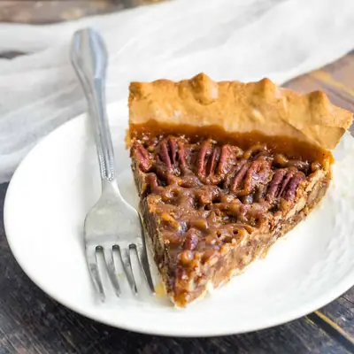

Vegan Pecan Pie without Corn Syrup

Ingredients
- 1 batch gluten-free pie crust
- 1 cup chopped pecans
- 1/3 cup pecan halves
- 3 tbsp vegan butter
- 1/2 cup organic brown sugar
- 1/3 cup pure maple syrup
- 1/2 cup full fat coconut milk
- 2 tbsp corn starch
- 1 tsp vanilla extract
- 1/2 tsp salt
- 1/4 tsp nutmeg
Steps
- Prepare gluten-free pie crust.
- Preheat oven to 350 F. Over medium heat melt butter. Add the organic brown sugar. Whisk together until the brown sugar is melted and golden brown in color. Add the maple syrup, vanilla extract, salt, and nutmeg. Whisk together until combined.
- In a small bowl, whisk together the coconut milk and corn starch.
- Quickly whisk in the coconut milk and corn starch into the saucepan over medium heat. Then remove from heat.
- Spread the chopped pecans evenly on the bottom of the pie crust.
- Pour the the filling over the pecans, use a spatula to spread evenly.
- Add the pecan halves around the edge of the pie for decoration (optional).
- Bake for 30-35 minutes or until the crust is golden brown and the filling is bubbling. After about 15 minutes cover the edges of the pie crust with aluminum foil to avoid the edges from burning.
- Remove from the oven and allow to cool at room temperature for 1 hour. Then transfer to the refrigerator to chill for 2-3 hours before slicing and serving.
Recipe by Anjali Shah · The Picky Eater, from The Picky Eater. Saved here for personal use; the original has the full notes, tips and photos. Open original